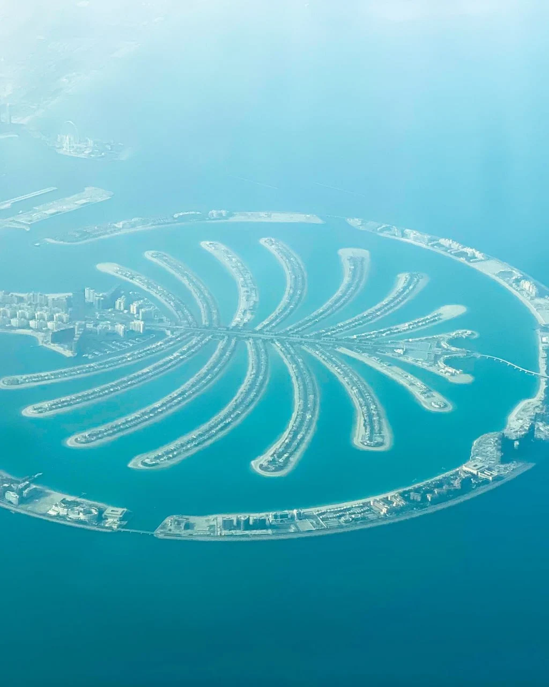

LUXURY • BEACHFRONT • RESORTS
Explore one of Dubai's most famous landmarks, offering luxury resorts, private residences, fine dining and spectacular waterfront experiences.
Palm Jumeirah is one of the world's most ambitious engineering projects and one of Dubai's most recognizable destinations. Built in the shape of a palm tree, the island extends into the Arabian Gulf and hosts luxury hotels, residences, beach clubs and attractions.
Palm Jumeirah has become a global symbol of Dubai's innovation, luxury lifestyle and tourism industry. Visitors from around the world come to experience its resorts, beaches and waterfront attractions.
Palm Jumeirah is home to some of Dubai's most prestigious hotels including:
• Atlantis The Palm
• Atlantis The Royal
• One&Only The Palm
• W Dubai “ The Palm
• Waldorf Astoria Dubai Palm Jumeirah
The island features a wide selection of restaurants ranging from casual beachfront dining to internationally recognized fine dining venues.
Visitors can enjoy waterfront views, celebrity chef restaurants and luxury hotel dining experiences.
Palm Jumeirah offers exclusive beach clubs, wellness facilities, luxury spas and premium leisure experiences.
The area is popular among tourists, residents and business travelers seeking a resort-style lifestyle.
Residents benefit from private beaches, luxury apartments, villas and a unique waterfront environment.
Palm Jumeirah remains one of Dubai's most prestigious residential communities.
Palm Jumeirah continues to attract investors due to its international reputation, limited waterfront inventory and strong demand from both residents and tourists.
• Atlantis Aquaventure
• The Pointe
• Palm West Beach
• Nakheel Mall
• Dubai Marina
• Bluewaters Island
Palm Jumeirah is ideal for:
• Luxury travelers
• Families
• Beach lovers
• Property investors
• Long-term residents
Palm Jumeirah remains one of Dubai's most iconic destinations. Combining luxury hospitality, beachfront living, premium dining and world-class attractions, it continues to define the city's global image and appeal.